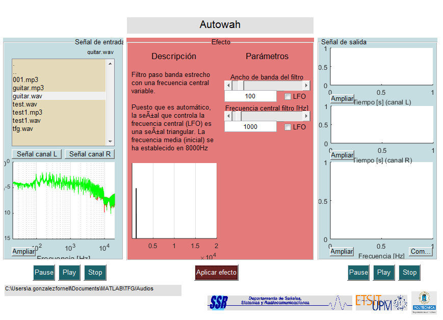

Contents
function varargout = autowah(varargin)
% Efecto de AUTOWAH % % Si desea pasar la salida del efecto a su workspace escriba: % % y = autowah; % % La variable devuelta "y" se corresponde con un array % multidimensional formado por las siguientes señales % y(:,1) señal canal L % y(:,2) señal canal R % y(:,3) espectro de señal canal L % y(:,4) espectro de señal canal R % y(:,5) espectro de señal media entre ambos canales % Nota: puede cambiar el nombre de la variable "y" por la que desee. % Begin initialization code - DO NOT EDIT gui_Singleton = 1; gui_State = struct('gui_Name', mfilename, ... 'gui_Singleton', gui_Singleton, ... 'gui_OpeningFcn', @autowah_OpeningFcn, ... 'gui_OutputFcn', @autowah_OutputFcn, ... 'gui_LayoutFcn', [] , ... 'gui_Callback', []); if nargin && ischar(varargin{1}) gui_State.gui_Callback = str2func(varargin{1}); end if nargout [varargout{1:nargout}] = gui_mainfcn(gui_State, varargin{:}); else gui_mainfcn(gui_State, varargin{:}); end % End initialization code - DO NOT EDIT
EFECTO
--- Executes on button press in aplicar.
function aplicar_Callback(hObject, eventdata, handles)
% hObject handle to aplicar (see GCBO) % eventdata reserved - to be defined in a future version of MATLAB % handles structure with handles and user data (see GUIDATA) % Limpieza de salida z_interfaz_limpieza % Autowah BW = handles.BW; f_1 = handles.f_0-BW/2; f_2 = handles.f_0+BW/2; if handles.LFO_1.checkbox || handles.LFO_2.checkbox % Con LFO res.LFO = 10; res.y = res.LFO*floor(length(handles.x(:,1))/handles.LFO_N); for n = 1:res.LFO:handles.LFO_N if handles.LFO_1.checkbox % LFO 1 BW = handles.LFO_1.x(n); end if handles.LFO_2.checkbox % LFO 2 f_0 = handles.LFO_2.x(n); f_1 = f_0-BW/2; f_2 = f_0+BW/2; end filtro = designfilt('bandpassfir','FilterOrder',10,'CutoffFrequency1',f_1,'CutoffFrequency2',f_2,'SampleRate',handles.fs); handles.y((n-1)*res.y+1:n*res.y,:) = filter(filtro,handles.x((n-1)*res.y+1:n*res.y,:)); end else % Sin LFO filtro = designfilt('bandpassfir','FilterOrder',10,'CutoffFrequency1',f_1,'CutoffFrequency2',f_2,'SampleRate',handles.fs); handles.y = filter(filtro,handles.x); end z_interfaz_salida
Undefined function or variable 'designfilt'.
Error in autowah>aplicar_Callback (line 68)
filtro =
designfilt('bandpassfir','FilterOrder',10,'CutoffFrequency1',f_1,'CutoffFrequency2',f_2,'SampleRate',handles.fs);
Error in gui_mainfcn (line 95)
feval(varargin{:});
Error in autowah (line 32)
gui_mainfcn(gui_State, varargin{:});
Error in
@(hObject,eventdata)autowah('aplicar_Callback',hObject,eventdata,guidata(hObject))
Error using waitfor
Error while evaluating UIControl Callback
Undefined function or variable 'designfilt'.
Error in autowah>aplicar_Callback (line 68)
filtro =
designfilt('bandpassfir','FilterOrder',10,'CutoffFrequency1',f_1,'CutoffFrequency2',f_2,'SampleRate',handles.fs);
Error in gui_mainfcn (line 95)
feval(varargin{:});
Error in autowah (line 32)
gui_mainfcn(gui_State, varargin{:});
Error in
@(hObject,eventdata)autowah('aplicar_Callback',hObject,eventdata,guidata(hObject))
Error using waitfor
Error while evaluating UIControl Callback
Parámetros
--- Executes on slider movement.
function par_1_Callback(hObject, eventdata, handles) % hObject handle to par_1 (see GCBO) % eventdata reserved - to be defined in a future version of MATLAB % handles structure with handles and user data (see GUIDATA) handles.BW = get(hObject,'Value'); set(handles.par_1_value,'String',handles.BW) handles.limites(2).Min = handles.BW/2; handles.limites(2).Max = 20000-handles.BW/2; if handles.f_0 < handles.limites(2).Min handles.f_0 = handles.limites(2).Min; set(handles.par_2,'Value',handles.f_0) set(handles.par_2_value,'String',handles.f_0) elseif handles.f_0 > handles.limites(2).Max handles.f_0 = handles.limites(2).Max; set(handles.par_2,'Value',handles.f_0) set(handles.par_2_value,'String',handles.f_0) end set(handles.par_2,'Visible','on','Value',handles.f_0,'Min',handles.limites(2).Min,'Max',handles.limites(2).Max) % Update handles structure guidata(hObject, handles); LFO_plot(handles); % Hints: get(hObject,'Value') returns position of slider % get(hObject,'Min') and get(hObject,'Max') to determine range of slider function par_1_value_Callback(hObject, eventdata, handles) % hObject handle to par_1_value (see GCBO) % eventdata reserved - to be defined in a future version of MATLAB % handles structure with handles and user data (see GUIDATA) if str2double(get(hObject,'String'))>=10 && str2double(get(hObject,'String'))<=1000 handles.BW = str2double(get(hObject,'String')); set(handles.par_1,'Value',handles.BW) handles.limites(2).Min = handles.BW/2; handles.limites(2).Max = 20000-handles.BW/2; if handles.f_0 < handles.limites(2).Min handles.f_0 = handles.limites(2).Min; set(handles.par_2,'Value',handles.f_0) set(handles.par_2_value,'String',handles.f_0) elseif handles.f_0 > handles.limites(2).Max handles.f_0 = handles.limites(2).Max; set(handles.par_2,'Value',handles.f_0) set(handles.par_2_value,'String',handles.f_0) end set(handles.par_2,'Visible','on','Value',handles.f_0,'Min',handles.limites(2).Min,'Max',handles.limites(2).Max) else set(handles.par_1_value,'String',handles.BW) end % Update handles structure guidata(hObject, handles); LFO_plot(handles); % Hints: get(hObject,'String') returns contents of par_1_value as text % str2double(get(hObject,'String')) returns contents of par_1_value as a double % --- Executes on button press in par_1_LFO. function par_1_LFO_Callback(hObject, eventdata, handles) % hObject handle to par_1_LFO (see GCBO) % eventdata reserved - to be defined in a future version of MATLAB % handles structure with handles and user data (see GUIDATA) handles = z_LFO(handles,1); handles.limites(2).Min = (handles.LFO_1.amplitud+handles.LFO_1.offset)/2; handles.limites(2).Max = 20000-(handles.LFO_1.amplitud+handles.LFO_1.offset)/2; set(handles.par_2,'Min',handles.limites(2).Min,'Max',handles.limites(2).Max) % Update handles structure guidata(hObject, handles); LFO_plot(handles); % Hint: get(hObject,'Value') returns toggle state of par_1_LFO % --- Executes on slider movement. function par_2_Callback(hObject, eventdata, handles) % hObject handle to par_2 (see GCBO) % eventdata reserved - to be defined in a future version of MATLAB % handles structure with handles and user data (see GUIDATA) handles.f_0 = get(hObject,'Value'); set(handles.par_2_value,'String',handles.f_0) % Update handles structure guidata(hObject, handles); LFO_plot(handles); % Hints: get(hObject,'Value') returns position of slider % get(hObject,'Min') and get(hObject,'Max') to determine range of slider function par_2_value_Callback(hObject, eventdata, handles) % hObject handle to par_2_value (see GCBO) % eventdata reserved - to be defined in a future version of MATLAB % handles structure with handles and user data (see GUIDATA) if str2double(get(hObject,'String'))>=handles.limites(2).Min && str2double(get(hObject,'String'))<=handles.limites(2).Max handles.f_0 = str2double(get(hObject,'String')); set(handles.par_2,'Value',handles.f_0) else set(handles.par_2_value,'String',handles.f_0) end % Update handles structure guidata(hObject, handles); LFO_plot(handles); % Hints: get(hObject,'String') returns contents of par_2_value as text % str2double(get(hObject,'String')) returns contents of par_2_value as a double % --- Executes on button press in par_2_LFO. function par_2_LFO_Callback(hObject, eventdata, handles) % hObject handle to par_2_LFO (see GCBO) % eventdata reserved - to be defined in a future version of MATLAB % handles structure with handles and user data (see GUIDATA) handles = z_LFO(handles,2); % Update handles structure guidata(hObject, handles); LFO_plot(handles); % Hint: get(hObject,'Value') returns toggle state of par_2_LFO % --- Executes on slider movement. function par_3_Callback(hObject, eventdata, handles) % hObject handle to par_3 (see GCBO) % eventdata reserved - to be defined in a future version of MATLAB % handles structure with handles and user data (see GUIDATA) % Hints: get(hObject,'Value') returns position of slider % get(hObject,'Min') and get(hObject,'Max') to determine range of slider function par_3_value_Callback(hObject, eventdata, handles) % hObject handle to par_3_value (see GCBO) % eventdata reserved - to be defined in a future version of MATLAB % handles structure with handles and user data (see GUIDATA) % Hints: get(hObject,'String') returns contents of par_3_value as text % str2double(get(hObject,'String')) returns contents of par_3_value as a double % --- Executes on button press in par_3_LFO. function par_3_LFO_Callback(hObject, eventdata, handles) % hObject handle to par_3_LFO (see GCBO) % eventdata reserved - to be defined in a future version of MATLAB % handles structure with handles and user data (see GUIDATA) handles = z_LFO(handles,3); % Update handles structure guidata(hObject, handles); % Hint: get(hObject,'Value') returns toggle state of par_3_LFO % --- Executes on slider movement. function par_4_Callback(hObject, eventdata, handles) % hObject handle to par_4 (see GCBO) % eventdata reserved - to be defined in a future version of MATLAB % handles structure with handles and user data (see GUIDATA) % Hints: get(hObject,'Value') returns position of slider % get(hObject,'Min') and get(hObject,'Max') to determine range of slider function par_4_value_Callback(hObject, eventdata, handles) % hObject handle to par_4_value (see GCBO) % eventdata reserved - to be defined in a future version of MATLAB % handles structure with handles and user data (see GUIDATA) % Hints: get(hObject,'String') returns contents of par_4_value as text % str2double(get(hObject,'String')) returns contents of par_4_value as a double % --- Executes on button press in par_4_LFO. function par_4_LFO_Callback(hObject, eventdata, handles) % hObject handle to par_4_LFO (see GCBO) % eventdata reserved - to be defined in a future version of MATLAB % handles structure with handles and user data (see GUIDATA) handles = z_LFO(handles,4); % Update handles structure guidata(hObject, handles); % Hint: get(hObject,'Value') returns toggle state of par_4_LFO function par_5_Callback(hObject, eventdata, handles) % hObject handle to par_5 (see GCBO) % eventdata reserved - to be defined in a future version of MATLAB % handles structure with handles and user data (see GUIDATA) % Hints: get(hObject,'Value') returns position of slider % get(hObject,'Min') and get(hObject,'Max') to determine range of slider function par_5_value_Callback(hObject, eventdata, handles) % hObject handle to par_5_value (see GCBO) % eventdata reserved - to be defined in a future version of MATLAB % handles structure with handles and user data (see GUIDATA) % Hints: get(hObject,'String') returns contents of par_5_value as text % str2double(get(hObject,'String')) returns contents of par_5_value as a double % --- Executes on button press in par_5_LFO. function par_5_LFO_Callback(hObject, eventdata, handles) % hObject handle to par_5_LFO (see GCBO) % eventdata reserved - to be defined in a future version of MATLAB % handles structure with handles and user data (see GUIDATA) handles = z_LFO(handles,5); % Update handles structure guidata(hObject, handles); % Hint: get(hObject,'Value') returns toggle state of par_5_LFO % --- Executes on slider movement. function par_6_Callback(hObject, eventdata, handles) % hObject handle to par_6 (see GCBO) % eventdata reserved - to be defined in a future version of MATLAB % handles structure with handles and user data (see GUIDATA) % Hints: get(hObject,'Value') returns position of slider % get(hObject,'Min') and get(hObject,'Max') to determine range of slider function par_6_value_Callback(hObject, eventdata, handles) % hObject handle to par_6_value (see GCBO) % eventdata reserved - to be defined in a future version of MATLAB % handles structure with handles and user data (see GUIDATA) if str2double(get(hObject,'String'))>=0 & str2double(get(hObject,'String'))<=1 else end % Update handles structure guidata(hObject, handles); % Hints: get(hObject,'String') returns contents of par_6_value as text % str2double(get(hObject,'String')) returns contents of par_6_value as a double % --- Executes on button press in par_6_LFO. function par_6_LFO_Callback(hObject, eventdata, handles)
% hObject handle to par_6_LFO (see GCBO) % eventdata reserved - to be defined in a future version of MATLAB % handles structure with handles and user data (see GUIDATA) handles = z_LFO(handles,6); % Update handles structure guidata(hObject, handles); % Hint: get(hObject,'Value') returns toggle state of par_6_LFO
Gráfica del efecto
--- Executes on button press in graf_open.
function graf_open_Callback(hObject, eventdata, handles)
% hObject handle to graf_open (see GCBO) % eventdata reserved - to be defined in a future version of MATLAB % handles structure with handles and user data (see GUIDATA)
Controles de interfaz
--- Executes just before autowah is made visible.
function autowah_OpeningFcn(hObject, eventdata, handles, varargin) % Descripción del efecto set(handles.titulo,'String','Autowah') set(handles.des,'String',{'Filtro paso banda estrecho con una frecuencia central variable.','','Puesto que es automático, la señal que controla la frecuencia central (LFO) es una señal triangular. La frecuencia media (inicial) se ha establecido en 8000Hz'}) % Inicialización de parámetros handles.BW = 100; handles.limites(1).Min = 10; handles.limites(1).Max = 1000; set(handles.par_1,'Visible','on','Value',handles.BW,'Min',handles.limites(1).Min,'Max',handles.limites(1).Max) set(handles.par_1_value,'Visible','on','String',handles.BW) set(handles.par_1_title,'Visible','on','String','Ancho de banda del filtro') set(handles.par_1_LFO,'Visible','on') handles.f_0 = 1000; handles.limites(2).Min = handles.BW/2; handles.limites(2).Max = 20000-handles.BW/2; set(handles.par_2,'Visible','on','Value',handles.f_0,'Min',handles.limites(2).Min,'Max',handles.limites(2).Max) set(handles.par_2_value,'Visible','on','String',handles.f_0) set(handles.par_2_title,'Visible','on','String','Frecuencia central filtro [Hz]') set(handles.par_2_LFO,'Visible','on') set(handles.graf,'Visible','on') % LFO (necesario para inicializar el gráfico del efecto) handles.LFO_1.checkbox = 0; handles.LFO_2.checkbox = 0; handles.LFO_3.checkbox = 0; handles.LFO_4.checkbox = 0; handles.LFO_5.checkbox = 0; handles.LFO_6.checkbox = 0; LFO_plot(handles); % Interfaz z_interfaz_OpeningFcn % UIWAIT makes autowah wait for user response (see UIRESUME) % --- Executes on selection change in entrada_lista. function entrada_lista_Callback(hObject, eventdata, handles) % hObject handle to entrada_lista (see GCBO) % eventdata reserved - to be defined in a future version of MATLAB % handles structure with handles and user data (see GUIDATA) % Interfaz z_interfaz_entrada_lista_Callback % Hints: contents = cellstr(get(hObject,'String')) returns entrada_lista contents as cell array % contents{get(hObject,'Value')} returns selected item from entrada_lista % --- Outputs from this function are returned to the command line. function varargout = autowah_OutputFcn(hObject, eventdata, handles) % varargout cell array for returning output args (see VARARGOUT); % hObject handle to figure % eventdata reserved - to be defined in a future version of MATLAB % handles structure with handles and user data (see GUIDATA) % Get default command line output from handles structure z_interfaz_OutputFcn % --- Executes during object creation, after setting all properties. function entrada_lista_CreateFcn(hObject, eventdata, handles) % hObject handle to entrada_lista (see GCBO) % eventdata reserved - to be defined in a future version of MATLAB % handles empty - handles not created until after all CreateFcns called % Hint: listbox controls usually have a white background on Windows. % See ISPC and COMPUTER. if ispc && isequal(get(hObject,'BackgroundColor'), get(0,'defaultUicontrolBackgroundColor')) set(hObject,'BackgroundColor','white'); end % --- Executes on button press in play_entrada. function play_entrada_Callback(hObject, eventdata, handles)
% hObject handle to play_entrada (see GCBO) % eventdata reserved - to be defined in a future version of MATLAB % handles structure with handles and user data (see GUIDATA) resume(handles.x_audio)
Controles de reproducción
--- Executes on button press in stop_entrada.
function stop_entrada_Callback(hObject, eventdata, handles) % hObject handle to stop_entrada (see GCBO) % eventdata reserved - to be defined in a future version of MATLAB % handles structure with handles and user data (see GUIDATA) stop(handles.x_audio) % --- Executes on button press in pause_entrada. function pause_entrada_Callback(hObject, eventdata, handles) % hObject handle to pause_entrada (see GCBO) % eventdata reserved - to be defined in a future version of MATLAB % handles structure with handles and user data (see GUIDATA) pause(handles.x_audio) % --- Executes on button press in play_salida. function play_salida_Callback(hObject, eventdata, handles) % hObject handle to play_salida (see GCBO) % eventdata reserved - to be defined in a future version of MATLAB % handles structure with handles and user data (see GUIDATA) resume(handles.y_audio) % --- Executes on button press in stop_salida. function stop_salida_Callback(hObject, eventdata, handles) % hObject handle to stop_salida (see GCBO) % eventdata reserved - to be defined in a future version of MATLAB % handles structure with handles and user data (see GUIDATA) stop(handles.y_audio) % --- Executes on button press in pause_salida. function pause_salida_Callback(hObject, eventdata, handles)
% hObject handle to pause_salida (see GCBO) % eventdata reserved - to be defined in a future version of MATLAB % handles structure with handles and user data (see GUIDATA) pause(handles.y_audio)
Ampliar gráficas
--- Executes on button press in entrada_L_open.
function entrada_L_open_Callback(hObject, eventdata, handles) % hObject handle to entrada_L_open (see GCBO) % eventdata reserved - to be defined in a future version of MATLAB % handles structure with handles and user data (see GUIDATA) z_entrada_L_open % --- Executes on button press in entrada_R_open. function entrada_R_open_Callback(hObject, eventdata, handles) % hObject handle to entrada_R_open (see GCBO) % eventdata reserved - to be defined in a future version of MATLAB % handles structure with handles and user data (see GUIDATA) z_entrada_R_open % --- Executes on button press in entrada_espectro_open. function entrada_espectro_open_Callback(hObject, eventdata, handles) % hObject handle to entrada_espectro_open (see GCBO) % eventdata reserved - to be defined in a future version of MATLAB % handles structure with handles and user data (see GUIDATA) z_entrada_espectro_open % --- Executes on button press in salida_L_open. function salida_L_open_Callback(hObject, eventdata, handles) % hObject handle to salida_L_open (see GCBO) % eventdata reserved - to be defined in a future version of MATLAB % handles structure with handles and user data (see GUIDATA) z_salida_L_open % --- Executes on button press in salida_R_open. function salida_R_open_Callback(hObject, eventdata, handles) % hObject handle to salida_R_open (see GCBO) % eventdata reserved - to be defined in a future version of MATLAB % handles structure with handles and user data (see GUIDATA) z_salida_R_open % --- Executes on button press in salida_espectro_open. function salida_espectro_open_Callback(hObject, eventdata, handles) % hObject handle to salida_espectro_open (see GCBO) % eventdata reserved - to be defined in a future version of MATLAB % handles structure with handles and user data (see GUIDATA) z_salida_espectro_open % --- Executes on button press in comparar. function comparar_Callback(hObject, eventdata, handles)
% hObject handle to salida_espectro_open (see GCBO) % eventdata reserved - to be defined in a future version of MATLAB % handles structure with handles and user data (see GUIDATA) z_comparar
Controles de parámetros
--- Executes during object creation, after setting all properties.
function par_1_CreateFcn(hObject, eventdata, handles) % hObject handle to par_1 (see GCBO) % eventdata reserved - to be defined in a future version of MATLAB % handles empty - handles not created until after all CreateFcns called % Hint: slider controls usually have a light gray background. if isequal(get(hObject,'BackgroundColor'), get(0,'defaultUicontrolBackgroundColor')) set(hObject,'BackgroundColor',[.9 .9 .9]); end % --- Executes during object creation, after setting all properties. function par_1_value_CreateFcn(hObject, eventdata, handles) % hObject handle to par_1_value (see GCBO) % eventdata reserved - to be defined in a future version of MATLAB % handles empty - handles not created until after all CreateFcns called % Hint: edit controls usually have a white background on Windows. % See ISPC and COMPUTER. if ispc && isequal(get(hObject,'BackgroundColor'), get(0,'defaultUicontrolBackgroundColor')) set(hObject,'BackgroundColor','white'); end % --- Executes during object creation, after setting all properties. function par_2_CreateFcn(hObject, eventdata, handles) % hObject handle to par_2 (see GCBO) % eventdata reserved - to be defined in a future version of MATLAB % handles empty - handles not created until after all CreateFcns called % Hint: slider controls usually have a light gray background. if isequal(get(hObject,'BackgroundColor'), get(0,'defaultUicontrolBackgroundColor')) set(hObject,'BackgroundColor',[.9 .9 .9]); end % --- Executes during object creation, after setting all properties. function par_2_value_CreateFcn(hObject, eventdata, handles) % hObject handle to par_2_value (see GCBO) % eventdata reserved - to be defined in a future version of MATLAB % handles empty - handles not created until after all CreateFcns called % Hint: edit controls usually have a white background on Windows. % See ISPC and COMPUTER. if ispc && isequal(get(hObject,'BackgroundColor'), get(0,'defaultUicontrolBackgroundColor')) set(hObject,'BackgroundColor','white'); end % --- Executes during object creation, after setting all properties. function par_3_CreateFcn(hObject, eventdata, handles) % hObject handle to par_3 (see GCBO) % eventdata reserved - to be defined in a future version of MATLAB % handles empty - handles not created until after all CreateFcns called % Hint: slider controls usually have a light gray background. if isequal(get(hObject,'BackgroundColor'), get(0,'defaultUicontrolBackgroundColor')) set(hObject,'BackgroundColor',[.9 .9 .9]); end % --- Executes during object creation, after setting all properties. function par_3_value_CreateFcn(hObject, eventdata, handles) % hObject handle to par_3_value (see GCBO) % eventdata reserved - to be defined in a future version of MATLAB % handles empty - handles not created until after all CreateFcns called % Hint: edit controls usually have a white background on Windows. % See ISPC and COMPUTER. if ispc && isequal(get(hObject,'BackgroundColor'), get(0,'defaultUicontrolBackgroundColor')) set(hObject,'BackgroundColor','white'); end % --- Executes during object creation, after setting all properties. function par_4_CreateFcn(hObject, eventdata, handles) % hObject handle to par_4 (see GCBO) % eventdata reserved - to be defined in a future version of MATLAB % handles empty - handles not created until after all CreateFcns called % Hint: slider controls usually have a light gray background. if isequal(get(hObject,'BackgroundColor'), get(0,'defaultUicontrolBackgroundColor')) set(hObject,'BackgroundColor',[.9 .9 .9]); end % --- Executes during object creation, after setting all properties. function par_4_value_CreateFcn(hObject, eventdata, handles) % hObject handle to par_4_value (see GCBO) % eventdata reserved - to be defined in a future version of MATLAB % handles empty - handles not created until after all CreateFcns called % Hint: edit controls usually have a white background on Windows. % See ISPC and COMPUTER. if ispc && isequal(get(hObject,'BackgroundColor'), get(0,'defaultUicontrolBackgroundColor')) set(hObject,'BackgroundColor','white'); end % --- Executes during object creation, after setting all properties. function par_5_CreateFcn(hObject, eventdata, handles) % hObject handle to par_5 (see GCBO) % eventdata reserved - to be defined in a future version of MATLAB % handles empty - handles not created until after all CreateFcns called % Hint: slider controls usually have a light gray background. if isequal(get(hObject,'BackgroundColor'), get(0,'defaultUicontrolBackgroundColor')) set(hObject,'BackgroundColor',[.9 .9 .9]); end % --- Executes during object creation, after setting all properties. function par_5_value_CreateFcn(hObject, eventdata, handles) % hObject handle to par_5_value (see GCBO) % eventdata reserved - to be defined in a future version of MATLAB % handles empty - handles not created until after all CreateFcns called % Hint: edit controls usually have a white background on Windows. % See ISPC and COMPUTER. if ispc && isequal(get(hObject,'BackgroundColor'), get(0,'defaultUicontrolBackgroundColor')) set(hObject,'BackgroundColor','white'); end % --- Executes during object creation, after setting all properties. function par_6_CreateFcn(hObject, eventdata, handles) % hObject handle to par_6 (see GCBO) % eventdata reserved - to be defined in a future version of MATLAB % handles empty - handles not created until after all CreateFcns called % Hint: slider controls usually have a light gray background. if isequal(get(hObject,'BackgroundColor'), get(0,'defaultUicontrolBackgroundColor')) set(hObject,'BackgroundColor',[.9 .9 .9]); end % --- Executes during object creation, after setting all properties. function par_6_value_CreateFcn(hObject, eventdata, handles) % hObject handle to par_6_value (see GCBO) % eventdata reserved - to be defined in a future version of MATLAB % handles empty - handles not created until after all CreateFcns called % Hint: edit controls usually have a white background on Windows. % See ISPC and COMPUTER. if ispc && isequal(get(hObject,'BackgroundColor'), get(0,'defaultUicontrolBackgroundColor')) set(hObject,'BackgroundColor','white'); end function LFO_plot(handles) % Representación del LFO cla(handles.graf) n = 0:20000; lfo(1:20001) = 0; f_0 = handles.f_0; BW = handles.BW; hold(handles.graf,'on') if handles.LFO_1.checkbox && handles.LFO_2.checkbox % LFO 1 y 2 % f_0 medio f_0 = handles.LFO_2.offset; % BW medio BW = handles.LFO_1.offset; % f_1 mínimo f_1_Min = round(f_0-handles.LFO_2.amplitud-BW/2); % f_2 máximo f_2_Max = round(f_0+handles.LFO_2.amplitud+BW/2); % BW mínimo BW_Min = BW-handles.LFO_1.amplitud; % BW máximo BW_Max = BW+handles.LFO_1.amplitud; set(line([f_1_Min f_1_Min],[0 2],'LineStyle',':'),'parent',handles.graf) set(line([f_2_Max f_2_Max],[0 2],'LineStyle',':'),'parent',handles.graf) set(line([f_0-BW_Min/2 f_0+BW_Min/2],[1.4 1.4]),'parent',handles.graf) set(line([f_0-BW_Min/2 f_0-BW_Min/2],[1.3 1.4]),'parent',handles.graf) set(line([f_0+BW_Min/2 f_0+BW_Min/2],[1.3 1.4]),'parent',handles.graf) set(line([f_0-BW_Max/2 f_0+BW_Max/2],[1.2 1.2]),'parent',handles.graf) set(line([f_0-BW_Max/2 f_0-BW_Max/2],[1.1 1.2]),'parent',handles.graf) set(line([f_0+BW_Max/2 f_0+BW_Max/2],[1.1 1.2]),'parent',handles.graf) elseif handles.LFO_1.checkbox % LFO 1 % BW medio BW = handles.LFO_1.offset; % BW mínimo BW_Min = BW-handles.LFO_1.amplitud; set(line([f_0-BW_Min/2 f_0+BW_Min/2],[1.4 1.4]),'parent',handles.graf) set(line([f_0-BW_Min/2 f_0-BW_Min/2],[1.3 1.4]),'parent',handles.graf) set(line([f_0+BW_Min/2 f_0+BW_Min/2],[1.3 1.4]),'parent',handles.graf) % BW máximo BW_Max = BW+handles.LFO_1.amplitud; set(line([f_0-BW_Max/2 f_0+BW_Max/2],[1.2 1.2]),'parent',handles.graf) set(line([f_0-BW_Max/2 f_0-BW_Max/2],[1.1 1.2]),'parent',handles.graf) set(line([f_0+BW_Max/2 f_0+BW_Max/2],[1.1 1.2]),'parent',handles.graf) elseif handles.LFO_2.checkbox % LFO 2 % f_0 medio f_0 = handles.LFO_2.offset; % f_1 mínimo f_1_Min = round(f_0-handles.LFO_2.amplitud-BW/2); set(line([f_1_Min f_1_Min],[0 2],'LineStyle',':'),'parent',handles.graf) % f_2 máximo f_2_Max = round(f_0+handles.LFO_2.amplitud+BW/2); set(line([f_2_Max f_2_Max],[0 2],'LineStyle',':'),'parent',handles.graf) end f_1 = round(f_0-BW/2); f_2 = round(f_0+BW/2); lfo(f_1+1:f_2+1) = 1; set(area(n,lfo),'parent',handles.graf) set(handles.graf,'XLim',[20 20000],'YLim',[0 1.5],'YTick',[],'XGrid','on') xlabel(handles.graf,'Frecuencia [Hz]') hold(handles.graf,'off')